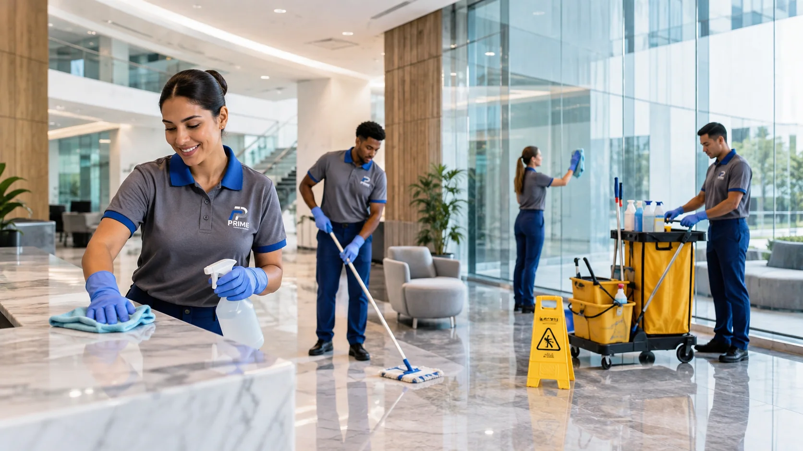

Rotinas de limpeza estruturadas para manter o ambiente bem cuidado.
O serviço é planejado conforme uso, circulação, horários e prioridades do local, evitando um modelo genérico de execução.

O que pode compor a rotina.
As atividades são definidas de acordo com a necessidade do cliente e as características do ambiente.
Rotinas para áreas de uso comum, administrativas e de circulação.
Execução conforme frequência e pontos definidos no escopo.
Atividades distribuídas conforme horários e prioridades do local.
Alinhamento do escopo para manter clareza sobre a execução.
Uma rotina coerente com o tipo de ambiente.
A necessidade de uma recepção, escritório, condomínio ou clínica pode ser diferente. Por isso, frequência e atividades devem ser definidas antes da implantação.
Ambientes corporativos
Rotinas alinhadas ao fluxo de colaboradores e visitantes.
Condomínios
Cuidados definidos para áreas comuns e circulação.
Clínicas e estabelecimentos
Planejamento compatível com atendimento ao público e rotina interna.
Precisa de uma proposta para limpeza profissional?
Conte o tipo de ambiente, horários e necessidade principal.